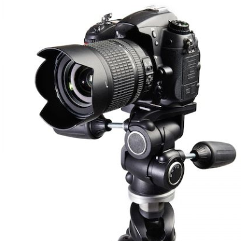

MEDIE & LYD
Her finder du kameraer, objektiver, stabilisatorer, tripods, mikrofoner og lysudstyr. Uanset om du laver portrætter, produktbilleder, interviews eller podcasts, har vi det, du behøver.
KAMERAER / LINSER

KAMERA-STABILISATORER
TRIPODS
LYD
LYS